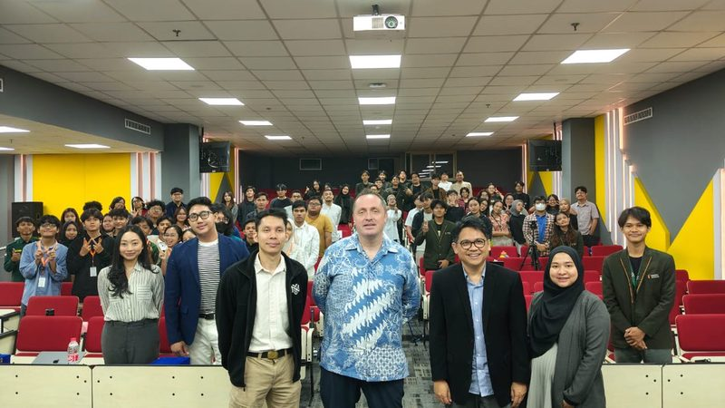

GUEST LECTURE · KULIAH UMUM #9
24 SEP 2025 · Pradita University, Tangerang
Location Intelligence — Turning Data into Sustainable Urban Solutions
Representing Bhumi Varta Technology, alongside Martyn Terpilowski (Founder & CEO)
Guest lecture for Pradita's Urban Planning cohorts (classes of 2022–2025) on where urban analytics and urban planning overlap and diverge — connecting data-driven methods to both business and planning use cases.
View event poster